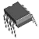
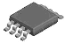
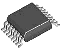
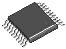
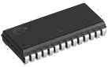
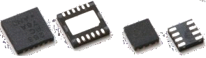
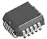
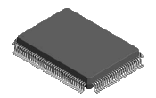
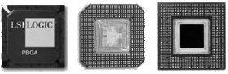
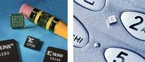

Printed Circuit Board (PCB) Basics
Layers and their Stackup
In this class we will be building boards with four conductive
layers --- so-called 4-layer boards. These boards are a lamination
of various conductive and non-conductive layers. Essentially, PCBs
are constructed from multiple layers of thin fiberglass. Some layers (known as "cores")
are coated on one or both sides with copper foil and others are bare fiberglass
(known as "prepreg" -- preimpregnated fiberclass cloth -- essentially a woven
glass matt of given weave properties impregnated with a polyester epoxy resin).
The thickness of each layer lies in the range from several mils to tens of mils. Layer
thickness and stackup is chosen so as to have the required overall electrical properties
and dimensions.
Electrical connections are formed by etching patterns into the copper
layers. The patterns are formed using masks and photographic techniques.
The fabrication of 4-layer boards for this class requires, at a minimum, the
seven masks listed below:
- Topside silkscreen -- specifies the
pattern of (white) paint on the topside that
will be applied via a silkscreen-like technique. It is important that the component
reference designators and component outlines be drawn on this layer.
- Topside soldermask -- identifies the places (openings in the green soldermask layer)
on the topside where component pins can be soldered to the board.
- Top traces -- the pattern of conductive traces on the topside of the board.
- Inner plane #1 a mostly copper region that is
normally tied to GND and also known as the "ground plane".
- Inner plane #2 a mostly copper region (one of the inside planes of the board)
that is normally used to provide efficient access to one or more DC voltages). Obviously,
when more than voltage is present the "plane" is subdivided
into distinct non-intersecting copper polygons.
- Bottomside soldermask -- specifies the soldermask openings for the bottom
side of the board.
- Bottomside silkscreen -- same idea as the topside silkscreen except for
the bottom of the board.
For this class, the boards will be assembled by hand,
so-called custom hand assembly.
For this we need just the seven masks listed above rather than nine.
If our designs were going to be mass-produced then at least two
additional masks would be required:
- Topside solderpaste mask
- Bottomside solderpaste mask
These additional masks specify the shapes and locations where
solder paste would be
dispensed in support of automated assembly. Since we are making a very
small number of
copies of our boards and since the soldering is all being done by hand
these solderpaste masks are not needed.
Holes in PCBs
Most printed circuit boards have holes drilled in them. There
are several types of
holes described below. The older PCB technology, primarily supporting
components with leads
requiring a hole for each pin, is known as "through hole" or "PTH"
(plated through hole)
technology whereas the more modern style that utilizes denser
surface-mounted components
takes the name "SMT" or "surface-mount technology". The primary
difference between these styles is the
number of, size of, and usage of holes. Note that PTH and SMT
components can be freely
intermixed on a board. The types of holes and the terminology follows:
- Via: The word "via" literally means
"way" --- a way to make a connection
between layers in a PCB. Vias are typically the smallest holes on the
board;
they are normally all the same size. For our class, vias consist of a
16 mil drill hole,
surrounded by a 34 mil conductive "pad" and they are plated through so
as to connect
a trace on the topside to another trace on the bottom of the board.
Since there
is no component lead going through a via hole vias can actually be made
even smaller.
We have chosen the 34-mil size to improve PCB yield as well as to
facilitate
debugging (note that 30-gauge wire-wrap wire can be inserted into a via
to provide
a convenient, though unplanned, test point).
- Through hole:
This term doesn't require much definition because its name says it all,
though today's technology does include the campability for having holes that go only
part of the way through a board (so-called "blind vias").
Through holes are holes that go completely through the board. They are most often
plated through so that there is a conductive path from one side to the other
(when plated, they are also known as "plated through holes" or "PTH").
- Tooling hole: Also known as a "mounting
hole", this term refers to a hole in a printed circuit board that is
used to attach the board to a test fixture or to
its operational location. Often tooling holes are non-plated through,
meaning that they remain insolated from any electrical components or traces on the board.
Holes have an implicit interaction with each of the PCB layers they pass through.
As a plated-through hole carrying a signal passes through a ground plane, a
(negative) clearance pad is used to ensure that the copper ground plane is kept well
separated from the signal that is passing through. Similar clearance pads are also
used on power plane layers. Clearance pads must be larger in diameter than the
drilled hole (by approximately 15 mils).
But what do we do when we want to make a connection between a trace on either
the topside or bottomside and one of the inner planes? It would be sufficient to
merely omit the clearance pad; that would result in a solid connection between the
plated wall of the through hole and the copper plane. Since inner planes are
intended to be used for power supply and ground connections, however,
we expect relatively large currents to flow in these locations. Usually, these
planes are made thicker, so that they can handle higher currents. And, since
copper is an excellent conductor of heat, the power and ground planes also
provide a heat-spreading or heat-sinking effect. This can make it extra
difficult to solder to pins that connect to planes .... they can take a great deal
of heat.
To improve the solderability of pins that connect to planes,
we normally provide a tiny "expansion joint" at these locations.
The implementation of such a joint is known as a thermal pad,
or more simply, just a thermal. The image below shows a region of an inner
plane with some thermals of various sizes. You can recognize them by their "X"-shaped
structure. In this image, the green material represents copper and the black
areas represent no copper. The hole in the middle of each thermal will be drilled out,
leaving a plated-through attachment between the voltage on the plane and
whatever is connected to the through-hole on the topside and/or bottomside.
The structures that look like a donut (with no "X" across) are a type of
clearance pads. They isolate the plated-through hole from the plane to ensure
that no connection is made.
The two lines with via holes on each end are
traces with isolation around them. Once a plane region has been isolated by
surrounding it with non-copper space, it can be used like a regular outer
plane, including routed traces. It is normally better to use the inner planes
for power and ground connections --- i.e. as planes --- but there are sometimes
good reasons to include routing on these planes.
Packages and Component Footprints
Printed circuit boards are all about circuits, i.e. interconnections among
electronic components. Most components are soldered to PCBs. In order to
provide the right environment for soldering to be effective, the leads of
a component must make reliable contact (both electrical and mechanical)
to the etched copper traces. Each component must have an appearance on the
board; this appearance is referred to as the component's land pattern.
A component's land pattern is a set of etched copper features that directly
corresponds to the leads of the component. These features are normally made
a bit larger than the component leads so there is space for the
solder. In the Mentor Graphics tools, these land patterns arise as "cells".
There is a tutorial within the Library Manager section about how to
make a "cell" as well as how to use them in a design.
Below is a list of packages (incomplete) currently used
in the electronics industry.
- Dual in-line (DIP) or Plastic DIP (PDIP):
 These packages
are among the most mature IC packages in use today. They are rectangular
in shape with leads emerging on the two longest sides, forming
two parallel lines. These packages utilize plated through hole (PTH) technology
as each lead requires a hole in the PCB. Typical lead counts range from 8 to 48.
The separation between adjacent leads (which we call the lead pitch)
in dual in-line packages is normally 100 mils.
- Small-Outline Integrated Circuit (SOIC):
 The SOIC is a popular
rectangular surface-mounted IC package with 8 or more so-called "gull-wing" leads.
The leads emerge on the two long sides, forming two parallel rows
much like DIPs though without any holes required. Typical body widths are
150 mils (so-called "narrow SOICs") or 300 mils ("wide body SOICs")
and the most typical lead pitch is 50 mils (1.27 mm).
- Shrink Small-Outline Package (SSOP):
 The SSOP is a smaller (so-called "shrink" version)
of the SOIC. Lead counts range from 8 to 64 and the lead pitches are
more aggressive, ranging from 50 mils down to 25 mils.
Typical body widths are 150 mils, 209 mils, or 300 mils.
- Thin Shrink Small-Outline Package (TSSOP):
 The TSSOP package is even smaller than
the SSOP. The body of TSSOP packages is also thinner than otherwise-corresponding
SSOP packages. Lead counts range from 8 to 80 and the lead pitches are
very aggressive, ranging from 25 mils down to 15 mils.
There are several body sizes but we do not encourage use of TSSOP packages
due to issues that arise with assembly, debugging, and rework. The TSSOP is
on the list of forbidden (or at least discouraged) package types for ECE189.
You should avoid using it.
- Small-Outline J-lead Package (SOJ):
 The SOJ package is exactly
like the SOIC except that the leads emerge from the sides and
turn under the package; they are shaped like a "J".
SOJ packages are a bit more difficult to solder down but they
were invented so that they could be supported by sockets.
Sockets are useful when the integrated circuit must be
removable such as would be the case for a ROM or flash memory
that needs to be taken to a programmer to be written. When a package
with J-leads has leads on all four sides, it is called an LCC or PLCC
as described below.
- Quad Flat No-Lead (QFN) Package:
 The QFN is a two- or four-sided
leadless chip package that is (unfortunately) becoming increasingly
popular with chip vendors. The popularity is presumably due to
its excellent electrical properties, though the soldering, debugging,
and handling properties leave a bit to be desired. The QFN is
currently on the do-not-use-for-ECE189 list because in the last
few years every single time we have attempted to use it we have
encountered significant issues. Please avoid selecting a part
in this type of package.
- Leaded Chip Carrier (LCC) or Plastic LCC (PLCC):
 A leaded chip carrier (LCC) or the
plastic version of the same thing (PLCC) is similar to an SOJ package
except that there are leads on all four sides.
It supports sockets and typical lead counts are from 20 to 84.
This package has some flexibility in that it can be directly
soldered onto the PCB or it can be used with a socket.
- Quad Flat Pack (QFP) or Plastic QFP (PQFP):
 Integrated circuits with high
lead counts typically use a package like the ceramic QFP or the plastic
version (PQFP).
These packages have leads on four sides. The leads are of the
gull-wing style such as are used in SOICs though they tend to be
smaller and much more tightly packed. Lead counts in QFPs typically
range from 44 up to well above 200. Lead pitch varies widely
with 1.0 mm (39 mils), 0.80 mm (31.4 mils), 0.65 mm (25.6 mils),
and 0.5 mm (19.6 mils) being the most typical. In selecting your
processor (which will most likely come in some sort of QFP) be careful
to avoid the more aggressive tight-pitch varieties. Your debugging
will be much much easier if you use a slightly larger package.
- Ball Grid Array (BGA):
 Integrated circuits with very high
lead counts often come in ball grid array (BGA) packages. Three BGA
packages are shown above. The leftmost one is a top view whereas the
others are bottom views of the packages. BGA packages
are popular because they are very dense, thus saving board space.
They are on the "forbidden list" for ECE189, however. That means
you may not use them. The reasons for this are many but the primary
issue is cost. Special equipment is required to install or rework
these packages. Such equipment is currently not available on campus
so any manipulation involving a BGA package would require a trip to
the assembler and an extra charge of $50 to $100.
Another reason we have chosen to forbid BGAs is that there is
absolutely no access to signals once the packages have been mounted on the
board. Everything happens entirely underneath the part. This makes
debugging impossible. Bottom line: you may not use BGAs in ECE189.
- Chip-Scale Package (CSP):
 The chip-scale
package is an example of a very tiny (hence the name "chip-scale")
package that we cannot use in this class.
Packages like this are intended primarily for very high-density
(and often high volume) applications like inside cell phones.
CSPs are, essentially, just chip-level BGAs. The images above illustrate
the tiny size by showing them relative to a pencil eraser or a cell phone
keyboard. You may not use CSPs in ECE189.
- 0805 Packages: For surface-mounted resistors and capacitors (and
also sometimes LEDs and other 2-terminal devices) there is a series of
standard packages whose sizes are given in units of 0.01 inch. One
such package is the 0805 which means that it measures 80 mils by 50 mils.
A slightly larger variety in the same general family is 1206 (120 mils by 60 mils).
0805 and 1206 packages are easy to work with and their use in this
class is encouraged. Smaller two-terminal SMT devices such as 0603, 0402, or
0201 are not allowed. They are, simply, too small to deal with
and their use for our class purposes
would drive our assembly costs considerably higher.
Forbidden Packages for ECE189 Projects
For cost, handling, and debugging reasons we do not allow use in this class
of some of the more aggressive electronic packaging that is available on the market.
A partial list of forbidden packages follows:
- No SMT resistors or capacitors smaller than size 0805 (80 mils x 50 mils).
This forbidden list includes 0603, 0402, and the almost invisible 0201 package sizes.
The 0805 and larger sizes are fine and can be used without problems.
- No QFN packages of any type. In past years various groups have attempted to use
these. We have had a great deal of trouble with these packages because all of the
land patterns are completely covered by the component, once installed. Not only
is it difficult for the assembler to solder the components down in the first place
but it is nearly impossible for us to make any changes whatsoever. You may
not believe this, but we often find errors in the initial ECE189 student designs
 . Sometimes these errors aren't discovered until
after the boards have been made and assembled. We workaround such errors by
making patches to the board. With QFN packages, any such patches
or changes are extremely difficult if not impossible for us to do without taking
the whole board back to the assembler.
. Sometimes these errors aren't discovered until
after the boards have been made and assembled. We workaround such errors by
making patches to the board. With QFN packages, any such patches
or changes are extremely difficult if not impossible for us to do without taking
the whole board back to the assembler.
- No ball grid array (BGA) packages. For many of the same reasons cited above,
the debugging and rework issues associated with BGAs prevent us from allowing
these packages on ECE189 boards. Mounting and reworking boards with BGA packages
requires special equipment that is only available at the assembler. We cannot
do it on-campus. Like QFN packages, debugging with BGAs is next to impossible.
- While not strictly forbidden, you should avoid the densest examples
of SSOP, TSSOP, and similar packaging.
In this case it is the lead pitch (separation between adjacent component leads)
that matters. We'd like to deal with pitches greater than 30 mils (about 0.8 mm)
whenever possible. Some microprocessors and memories come only in packages that
use a lead pitch of 25 mils so, if one of these is your chosen processor,
we can allow it. But, be warned(!) that as the lead pitch
goes down, your debugging job gets much more difficult.
We strongly advise against using aggressively pitched packages in your ECE189 project.
You can often find equivalent parts that are packaged in larger,
less aggressive packages. By selecting larger packages you will make your
life far easier in spring quarter when you are debugging the project.
Solder Masks
As component packaging shrinks in size, the effort required to solder components
on boards increases dramatically. The soldermask layer is a tough semi-transparent
material coated on both sides of a PCB. It is what makes the PCB green (actually soldermasks
come in other colors as well but the boards for this class will always be green).
The purpose of the soldermask is to define the regions where components can
be soldered to pads or traces. The soldermask has openings directly over each of
the spots where a component lead touches its land pattern on the board. When there
are multiple component leads densely packed in a row it is the soldermask that
helps to prevent solder bridges (unwanted extra connections between adjacent
solder points).
Silkscreens
The last layers that go onto your PCB during the manufacturing process
are the silkscreens (sometimes referred to as legends).
There may be slikscreens for the topside, the bottomside, or none at all.
The silkscreen layers specify any painted graphics
(normally white in color) that are to appear. In an effort to keep our
budgets under control we normally request only a topside silkscreen though
if your project has components that need to be soldered on the bottomside
it will be necessary to request a bottomside silkscreen as well.
Silkscreens may have just about any graphical content ---
e.g. logos, project name, designer name(s) --- though there are certain
expectations associated with the electronic assembly process.
One expectation is that each and every component should have its unique
reference designator (aka "refdes") printed nearby the component
footprint and there must be some sort of outline or clear indication on the
silkscreen to indicate how the component is to be oriented (e.g. where its pin #1 is located).
For polarized parts such as diodes, LEDs, electrolytic capacitors, etc.,
it is imperative that the polarity is marked on the board (via the silkscreen).
It is customary to place a small "+" sign and/or a "-" sign near the appropriate
pin of polarized parts. Often these outlines and refdes positions are
a built-in part of each "cell" and if you make your own cells you must
be sure to include them.
The assembler relies on the reference designators to
find each part in its little bag that is in the parts kit we provide him.
This single marking on the board is the only link between the
parts kits, the bill of materials, and the bare printed circuit boards.
If your board has one or more components that are not identified by their
reference designators on the silkscreen, then the assembler will simply
skip them. The refdes field is a critical link for assembly. The
assembler will simply ignore any "extra" parts kit components.
How printed circuit boards are made and assembled
Here is a short video (running just under 5 minutes) that
shows how printed circuit boards are made and assembled. If you have
trouble with the embedded viewer, try an external viewer
here.